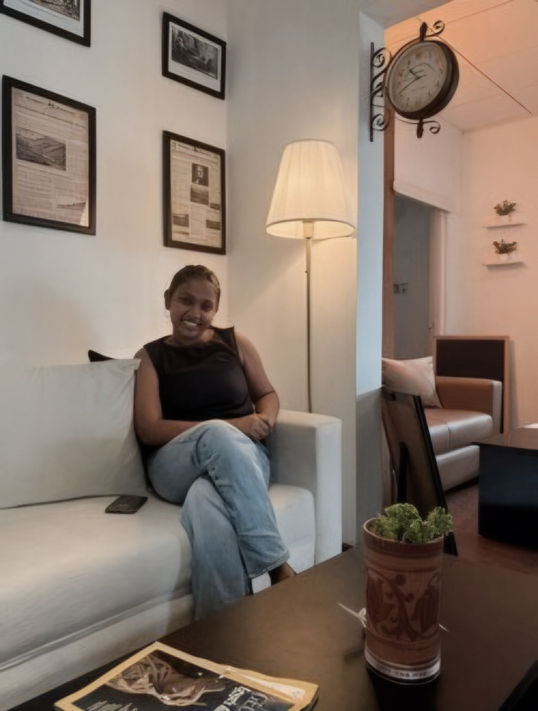

🎓
Undergraduate Studies — Biotechnology
University: Sri Lanka Institute of Information Technology
Status: Currently pursuing
Curious about life. Inspired by science. Interested in biotechnology, zoology, and the discoveries that help us understand living organisms.

A little about my scientific interests and goals.
I am a Biotechnology undergraduate with a strong interest in biological sciences, research, and understanding the complexity of living organisms. I am passionate about expanding my knowledge in biotechnology, zoology, and related scientific fields while developing my practical laboratory, analytical, and research skills. As an enthusiastic and motivated learner, I am eager to explore new scientific concepts, gain hands-on experience, and contribute to meaningful research projects. I look forward to collaborating with experienced researchers, learning from new opportunities, and building a strong foundation for my future career in the life sciences.
Building a strong foundation in biological and physical sciences.
University: Sri Lanka Institute of Information Technology
Status: Currently pursuing
School: Holy Family Convent, Bambalapitiya
Stream: Biological Science
Main subjects: Biology, Chemistry, Physics
School: Holy Family Convent, Bambalapitiya
Qualification: General Certificate of Education (Ordinary Level)
My educational journey has provided me with a foundation in science and a growing interest in biotechnology, biological sciences, and scientific research. I am eager to apply my knowledge, develop practical laboratory skills, and gain research experience in related fields.
Skills I am building through study, curiosity, and practice.
Curiosity that keeps me learning and exploring.
Exploring scientific articles and learning about new discoveries in biotechnology and biological sciences.
Learning about animals, biodiversity, and the natural environment.
Exploring research topics related to biotechnology, zoology, genetics, and molecular biology.
Developing knowledge through educational resources, online courses, and scientific publications.
Enjoying activities that encourage curiosity, creativity, and problem-solving.
Sharing ideas, participating in group activities, and improving communication, organization, and professional skills.
I would love to connect with researchers, students, and professionals in the life sciences.